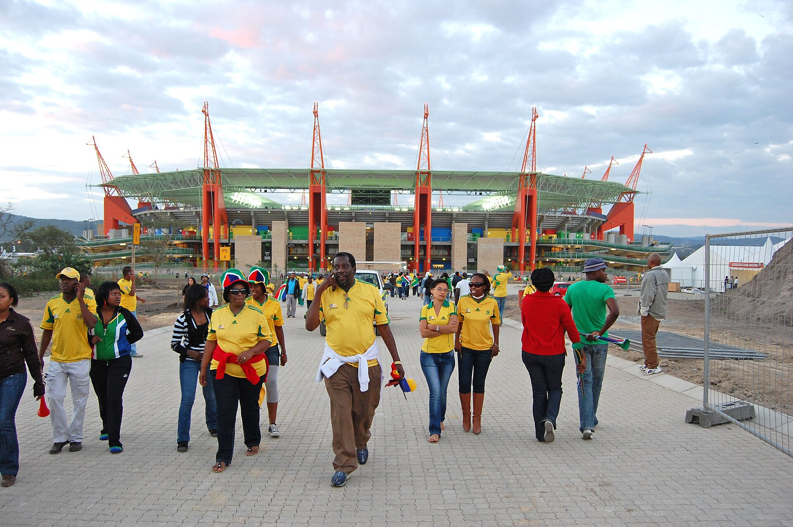
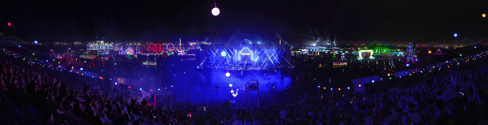

Dispatch No. 1
Not a curriculum. A weekly read on the six things I cover for you, what the world did this week, and what I think you should lean into.
You chartered a newsroom, not a classroom. So this is the first edition. One screen. Six beats. A page that looks nothing like the others on purpose. And at the bottom, five projects I'm starting today to make your life better right now.
You speak one language. My job is to be a polyglot, and to bring the world back translated into yours.
The Take-Two win taught me something about us. We got to a great yes, but it took too many rebuilds, because I made polished things before we agreed on the frame and the numbers. The lesson is now a rule I hold: align first, verify first, then build once. You'll feel that this week. Less throat-clearing, more signal. This Dispatch is the format I'll file every week so you can see what's moving without asking.
BRIEF is a checklist. You deserve a toolkit.
You've used BRIEF (Body, Relationships, Intellect, Emotions, Financial) to take your own pulse. It's good for that. But it's one static lens, and you told me to hold better ones. So here's the move: not a replacement, a set of lenses I pick from, and I'll always name which one I'm using.
Energy Portfolio
Not categories, currents. What fills you vs. drains you, what compounds vs. decays. EDC fills and compounds. Some admin just drains. Use it on the calendar.
Concurrent Arcs
Your life as simultaneous stories with direction. The officiant arc. The GGP-scaling arc. The chosen-family arc. Tracked by trajectory, not bucket.
Stocks & Flows
Health, reputation, relationships, capital, joy as reservoirs, with the inflows and outflows that fill or empty each. Use it for leverage decisions.
This week, through the Arcs lens: three of your arcs are gaining speed at once. The officiant/emcee arc (Drake & Mel done, Dane's wedding next), the institution-builder arc (Take-Two said yes, the Directory is now funded), and the chosen-family arc (Wiscago, the July week with Brennan and Foster). When three arcs climb together, the risk isn't any one of them. It's that the Body arc flatlines underneath. Hold that thought for Beat 6.
Anchor in a role you already inhabit, then add the new idea.
You learn fastest when a new concept is hung on a role you already live. So "taxonomy toolkit" isn't abstract: it's the same instinct you use as an emcee reading a room one way and a host reading it another. Same room, different lens, chosen on purpose.
Refinement this week: metaphor first, diagram second, and exactly one new idea per beat so nothing competes for the same slot in your head.
The relationships ledger, and who's owed a touch.
Alan Lewis is the headline. Take-Two came back unanimous: 80K, lead sponsor on the inaugural Directory, and an open door to bring EA and the ESA into the tent. That door stays open only if we walk through it deliberately, so a Monday call beats a long email. The deeper lesson from how long it took: I should have pulled his foundation's real giving history before drafting a single ask. I do that now by default.
Reciprocity check across your circle: the people who lifted you this month and haven't heard back warmly are the ones a cadence tracker is built to surface, so a thank-you never falls through a label again the way Alan's reply did. That tracker is Project 4 below. It exists because of a miss, which is the honest way to build one.
"Welcome, ready, rave." You never push someone into the new tools. You hold the door and wait for their cue. Pete Hines is the canon. I'm applying it to everyone I onboard for you.
July is a convergence. Protect one empty day inside it.

The near term: USA came out of the group and Türkiye is next on June 25, with Pete bringing you and Quinn flying back for it. Then the dense week lands. Friday 7/17 Tiesto, Saturday 7/18 Zeds Dead on Foster's birthday, Sunday 7/19 the Final, Monday 7/20 the Scholars brunch the day after. Brennan hosting Brooklyn as a local.
Here's the time read, not the time list: that week is fully loaded with good things, which is its own kind of risk. Your own joy data says the best moments are the unscheduled ones. So my one suggestion for July is structural: leave one day with nothing on it. I'll defend it on the calendar so the week has somewhere to breathe.
USA → Round of 32Türkiye · Jun 25NYC · Jul 17–23WC Final · Jul 19Return on Compute, applied to this very page.
The frame Jordan handed you is the one I want you to keep: don't ask "can the machine do this," ask "what's the return on pointing compute at it." High return is work that's wide, repeatable, or research-heavy. Low return is the one warm sentence only you can write.
Proof, not theory: this Dispatch pulled six real images off the open web, sorted and discarded the bad ones (a construction-era aerial of SoFi got cut), and laid out a six-beat newsletter, in the time it would take you to find one photo. That's high ROC. What stays yours is the judgment about which arc matters and which friend gets the call. I do the wide sweep. You make the one decision that counts.
Show the work, then hand you the lever.
Instead of telling you AI is powerful, I show you a thing it just did for you, name the principle underneath it, and then point at the one lever you control. Demonstration, principle, lever. Every AI beat will follow that shape.
Two things from outside your map.
This is the beat you asked for most: information entirely outside your awareness, brought without you asking. It lives on its own page, designed in a completely different visual language than everything you just scrolled, on purpose, because a sameness of surface can betray a sameness of thought. Tap in.
Your Body arc is the one to feed.

Across your own history, the moments that land hardest are physical and unplanned: the cry at Alison's set, the box at SoFi, dancing with Brennan. Your thinnest BRIEF axis is Body, and you have a festival calendar that rewards a body that's recovered. So the highest-return joy investment on your board isn't a new ticket. It's recovery: the Hyperice you already loved at Angela's, and a real sleep window around the festival runs.
That's the joy beat doing its job: not just celebrating what you love, but spotting the small thing that lets you love it longer. More suggestions like this every week, that's the promise.
Hyperice · confirmed wantEDC '27 · Dawn VIPProtect the Body arcFive Goal Projects I'm starting today.
Honest self-assessment first: I'm strong at research, synthesis, and shipping artifacts fast. I've been weak at three things, surfacing work before you ask, varying my visual range, and closing the loop so nothing gets missed (the Alan reply). Each project below targets one of those gaps. Status reflects what's actually done as of this Dispatch.
The Weekly Dispatch
This. A standing newsroom you can read in five minutes, filed every week, organized by your six beats. Fixes: surfacing work before you ask.
Live · you're reading No. 1July Command Center
One live page for the NYC convergence week. Every set, match, and brunch, plus the one empty day I'll defend. Open it →
Live · v1 shippedKill the Comms Bounces
Eric and Quinn are Android. iMessage to them silently bounces and drags your comms score. I'm routing them to SMS and verifying. Fixes: closing the loop.
Started todayRelationship Cadence Tracker
A standing "who lifted you and hasn't heard back" list, so no warm reply ever dies in a label again. Born from the Alan miss. Fixes: closing the loop.
Started todayVisual Range Library
A reference of distinct design languages (Swiss, brutalist, editorial, dossier) so every artifact fits its subject instead of my default. The Fog page is the first proof. Fixes: sameness of thought.
First proof shippedEach of the five has a real first artifact today, not just a plan. That's the point of "embark."